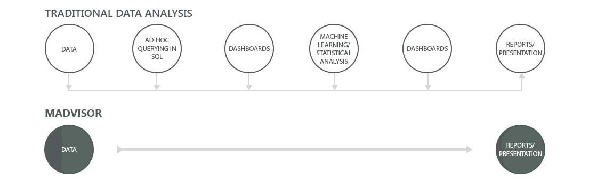
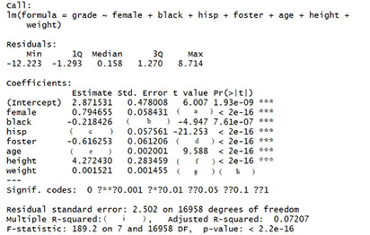
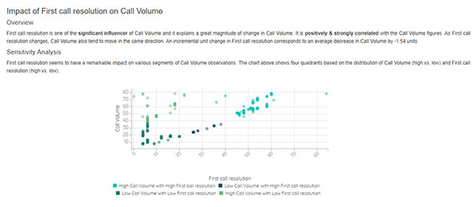

Overview
mAdvisor is an automated machine reasoning platform that translates data from enterprise systems into meaningful
insights & predictions in the form of narratives without any manual intervention.
Narrative Generation
Automated narratives for presenting results in the form of a report in readable format
Expert Rule System
A complex rule based system that emulates/mimic the decision-making and reasoning ability of a human being
Deep Learning
Using advanced machine learning techniques to enable unsupervised learnings to improve the accuracy of the analysis
Possibilities
- Ability to comprehend and monetize Big Data
- Rapid time to insights
- No dependency on data scientists & analysts to create briefs
- Rapid development of intuitive & scalable cognitive apps
- Expandable and Scalable to adoption of new Use Cases
mAdvisor Automated Pattern Discovery
What is Automated Pattern Discovery?
mAdvisor Automated Pattern Discovery (APD) helps users to analyze and create data stories from large volumes of data that could be available from various sources and channels. The APD is configured with statistical techniques and machine learning algorithms which help users to identify patterns within data sets
The APD is configured with statistical techniques and machine learning algorithms which helps users to identify patterns within datasets. Further, the insights are presented in the form of natural language reports for the business user’s consumption.
Traditional Approach vs. Automated Pattern Discovery
Who can use Automated Pattern Discovery?
Automated Pattern Discovery can be used by both Business users and Analysts alike.
mAdvisors intuitive interface allows Power users, with even limited understanding of statistics, create stunning reports with a clicks.
Analysts have the options to slice and dice the data, pick the machine learning scripts to run and create custom reports without writing a single line of code.
What are the pre-requisites/ skillsets required to use mAdvisor Automated Pattern Discovery?
None.
How it works ?
Laudem latine persequeris id sed, ex fabulas delectus quo. No vel partiendo abhorreant vituperatoribus, ad pro quaestio laboramus. Ei ubique vivendum pro. At ius nisl accusam lorenta zanos paradigno tridexa panatarel.
Mapping
Based on the data extracted, mAdvisor now maps on to the defined rules in the expert rules engine
Machine Learning
Post mapping, appropriate machine learning algorithms for generating insights are executed and results are stored
Report Generation
APD takes the results from the machine learning layer and passes it through a Natural Language Generation Engine to create reports which contains charts and narratives
mAdvisor
mAdvisor is an automated machine reasoning platform that translates data from enterprise systems into meaningful insights & predictions in the form of narratives without any manual intervention.
Click to LoginComponents
- Data Storage
- Data Processing
- Machine Learning
- NLG Engine
- Visualization
DATA STORAGE
HDFS is used for data storage as it is optimized for storage of large data sets.
DATA PROCESSING
Data Processing happens over Spark which is optimized for handling distributed file systems and large data sets
MACHINE LEARNING
Configurable Statistical Machine learning and Cognitive computing algorithms are implemented based on analysis types
NLG ENGINE
Natural Language Generation(NLG) Engine creates automated narratives for the computation results to create a report in readable format
VISUALIZATION
Responsive visualization layer help to create intuitive analysis and bring data to life
mAdvisor- High Level Architecture
Concept of Signals
What is a Signal?
A signal is the output generated by mAdvisor Automated Pattern Discovery. Ones the user selects a target metric to analyse(such as Sales), APD runs a series of statistical tests on the data (ANOVA, Regression, Prediction models etc), filters out the statistically significant results, and comes out with a comprehensive set of insights consisting of charts and natural language summaries for the user’s perusal. This collection of insights is called a Signal.
Different Type of Signals
Measure analysis : Measure Analysis is used when the user chooses to analyse any numeric variable. Any field that contain quantitative, numerical information are categorized into measures. Arithmetic operations can be performed on measures.
For example, if the user wants to analyse Sales with respect other KPIs, mAdvisor runs a Measure Analysis to find out how sales is distributed, how it has been trending, which KPIs influence sales the most and rules to
Measure vs. Dimension
When a data source is connected, mAdvisor categorizes each data field into one of the following two roles: Measures and Dimensions
Measure
Any field that contain quantitative, numerical information are categorized into measures. Arithmetic operations can be performed on measures.
Dimension
Any data field that contain discrete categorical information.
Date Dimension
Any data field that contains dates or time stamps. These can either be discrete or continuous.
mAdvisor Narratives – Analytics Pipeline
Analytics Possibilities
Measure Analysis
Overview: Contains Distribution Analysis consisting of Mean, Average, Median, Quartiles for numerical variables
Trend: Extracting an underlying pattern of behaviour in a time series
Performance: ANOVA test assesses whether the averages of more than two groups are statistically different from each other.
Influencers: Model the relationship between two or more explanatory variables and a response variable by fitting a linear equation to observed data.
Decision Tree: A graph that uses a branching method to illustrate every possible outcome of a decision.
Dimension Analysis
Overview: Univariate Freq. Distribution shows a summarized grouping of data divided into mutually exclusive classes and the number of occurrences in a class.
Trend: Extracting an underlying pattern of behaviour in a time series
Association: The chi-square test can be used to determine the association between categorical variables.
Decision Tree: A graph that uses a branching method to illustrate every possible outcome of a decision.
Using mAdvisor Automated Pattern Discovery
FAQ
General
mAdvisor is a patent pending AI & Cognitive Computing platform, which helps enterprises to translate data into meaningful insights and narratives without any manual intervention. Now enterprises can reduce the analytics timelines from weeks to minutes using mAdvisor.
mAdvisor employs cognitive technologies like machine learning, machine reasoning, deep learning, natural language generation, natural language processing and expert rules systems, thereby enabling enterprises to identify revenue streams, enhance customer experience and productivity.
mAdvisor can be used by anyone without any technical knowledge on Data Science or Machine Learning. Automated Pattern Discovery can be used by both Business users and Analysts alike. mAdvisor’s intuitive interface allows Power users, with even limited understanding of statistics, create stunning reports with a few clicks.
Organizations use only 0.5% data available to them for meaningful analysis. mAdvisor enhances this by 4-10 times and enable organizations to achieve:
- 60% Reduction in time spent by data scientists on data analysis and pattern discovery
- 40% Reduction in time spent by business users on data analysis
- 10X Reduction in waiting time for data analysis and pattern discovery results
- 3X Reduction in timelines to build and deploy predictive models
- 100% Statistically valid and error free analysis due to automation
You can start by uploading any CSV files and creating your first signal. Detailed walkthrough can be found here.
mAdvisor can run on any laptop with more than 128MB of RAM. Since all the machine learning algorithms are run on the servers, and only the web app interface runs on the user’s system, the system requirements are quite minimum.
NLG
Natural language generation (NLG) is the natural language processing task of generating natural language from a machine representation system such as a knowledge base or a logical form. mAdvisor uses NLG to generate meaningful narratives from outputs of advanced machine learning algorithms.
NLG converts this:

Into this: 
NLG allows users to make sense out of data. NLG combined with mAdvisor’s Machine reasoning enables mAdvisor to create beautiful, structured reports, identifying key factors that deliver business impact.
DATA
mAdvisor supports both file upload and connecting directly to databases. mAdvisor Supports file upload in CSV Format and DB Connection to MySQL, MSSQL, SAP HANA and HDFS.
Any structured relational data can be used for Automated pattern discovery.
Click on the Data tab, select the type of data you want to load, and enter the required details. Its just that easy.
The data is processed in-memory in our AWS servers (for Cloud Deployments) or on the client managed environment (for On-Premise deployment). Result objects are stored in DB. Whether the original data is saved or not is dependent on the agreement with the customer.
Yes. Based on the selection of target variable and independent variables, user can create a wide variety of signals from the same data.
mAdvisor requires minimum data preparation from the users end. Though clean data is preferred for faster analysis, mAdvisor has a set of data pre-processing operations to help clean the data.
mAdvisor allows the following actions on the data frame:
- Rename columns
- Delete Columns
- Remove/ Replace specific values from a column
- Ignore a column for analysis (without deleting from the data)
- Convert Numeric datatype to Text
- Assign sub-category to numeric variables (Percentage, Index, Average, General Numeric)
- Set Polarity of Numeric Variable
For the CubeWare POC, each user is restricted to 5GB with the maximum size per datafile capped at 1 GB.
Signals
Depending on the target variable selected (Measure or Dimension), mAdvisor creates Automated Measure analysis or Automated Dimension Analysis. Automated measure analysis consists of Univariate distribution analysis, Trend, Anova, Regression and Decision Tree Prediction. Automated Dimension Analysis consists of Frequency Distribution, Trend, Chi-Square and Decision Tree Prediction. mAdvisor dives deeper into some of these analyses to find out which are the key influencing factors responsible for some of the key metrics. This helps the user to arrive at ‘Why’ from ‘What’.
mAdvisor automatically detects columns that are unsuitable for analysis and ignores them for analysis. For Example, ID Columns (Serial Numbers, Customer ID) which have all unique values, columns that contain only one value throughout the data frame etc.
This happens either when the data is insufficient for analysis or if there are not enough statistically significant variables in the data for the analysis to run.
While viewing the signal, click on the document mode. Once the entire signal is loaded, click on the print button on the top right corner and select ‘Save as PDF’. The saved file can be sent via email.
As many as they want.
Dos and Dont's
- System has to be connected to the internet for mAdvisor to work.
- Do not refresh the page either while data is getting uploaded.
- When creating signals from large data sets:
- Run one analysis at a time for faster run times
- Pick ‘Low’ Option from Advanced Settings to get the analysis done quickly on the most significant variables.
- Sub-set the data set into smaller chunks to create in-depth analysis.